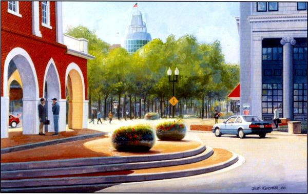

Cityscapes by Bob Rector
Although Bob Rector has practiced his art from Michigan to California and even in Europe, he seems to have found a home in Fayetteville, NC.
Historic Downtown is undergoing revitalization after suffering from the effects of suburbanization common in America in the 60s and 70s.The many old building from the 1800s and the individuals who are determined to renovate them and locate their businesses there have inspired Rector to paint the images in Rebirth of a City - Contemporary Images of Olde Fayetteville.
These images depict an American past that is being restored to the present like an old sepia photograph. The storefronts, the window reflections, the architectural detail - all portrayed in Rector's realistic style - evoke a sense of history and community that bind us all together.
Rebirth of a City
| Fayetteville's train station was build c. 1911 by the Atlantic Coastline Railroad. This architectural landmark is a fine and rare example of the Dutch Colonial Revival style. Passenger and freight trains still stop here regularly on the way to New York or Miami and points in between. This image is a tribute to the men and women who have been sent to fight on foreign soil. Through their bravery and sacrifice, our main freedoms have been preserved. This image is an expression of hope by the artist that all of our soldiers will return home safely one day. |
Coming Home Original: 27" X 20" $4250 Giclee: 27" X 20" $225 |
|
The Prince Original: 19" X 27" $3150 Giclee: 19" X 27" $225 |
Built in 1923, the Prince Charles was a prestigious hotel, meeting place, and social center in the midsized, Southern city of Fayetteville, North Carolina. It fell victim to urban decay in the 70s and narrowly escaped the wrecking ball. In 1991, an investor group of local citizens purchased the hotel and now it is a shining gem in downtown revitalization. The stunning Italianate architecture of the main entrance has been preserved and guest rooms have been redecorated with period furnishings. In addition, the Prince Charles has regained its reputation as the premier location for receptions and banquets, dances, and conferences. |
|
Built in 1900, Huske Hardware House was known throughout the region for carrying the very finest hardware supplies.Renovated as a restaurant nearly 100 years later, customers now order pepper steaks and veal scallions and premium beer brewed on the premises. This painting typifies the artist's near-photographic realism. Ironically, the impressionistic window reflections of other downtown businesses contribute to the strong realistic effect. |
Huske Hardware House Original: 30" X 21" $2750 Giclee: 28" X 20" $250 |
|
Dogwood Days Original: 21" X 28" SOLD Giclee: 21" X 28" $225 |
Festivals and parades just seem to belong Downtown in the heart of the city. In this scene from Fayetteville's annual spring festival, a youngster experiments with the equine diet while the friendly officer chats with an out-of-town visitor. The older brother has stopped playing with his stick puppet in order to see where this mischief will lead. | |
| The artist's fondness for his adopted city of Fayetteville, NC, is evident in this downtown scene. This perspective looking up Hay Street includes three landmark buildings whose origins span nearly 200 years - the Market House (1831), the First Citizen's Bank Building (1926), and the Robert C. Williams Business Center (2000). With a history that dates back to the Revolutionary War and earlier, Fayetteville has many other buildings from the 1800s and early 1900s that are undergoing restoration as part of the Downtown Renaissance. |
 Looking Up Original: 34" X 25" SOLD Giclee: 34" X 25" $225 |
|
Waiting for the Matinee 24†x 14†and is $150 Original: 22†X 13†SOLD Giclee: 24†x 14†$150 |
Architecture from the early 1900s has been preserved through the renovation of many old downtown buildings like these. Rude Awakening coffee shop was once Brady's Soda Shop. For their renovations, the owners won the Carraway Award presented by the Historic Preservation Foundation of North Carolina in 2001. The Cameo Art House Theatre was once Dixie Billiards for many years, but the building was originally constructed as Dixie Theater. In this painting, the artist invites us to pull up a chair and relax beneath the shade trees downtown with a cup of coffee and a pastry. Later the marquee lights of the art house theater will flicker on and the darkened stairwell will welcome home the young couple who live in the loft apartment above. | |
Olde City Hall Original: 19" X 23" $2450 Giclee: 19" X 23" $225 |
Inside Point News Original: 27" X 21" $2450 Giclee: 27" X 21" $225 |
|
|
Looking South on Gillespie Street Original: 20" X 14" $1950 Giclee: 20" X 14" $185 |
Looking Back Original: 40" X 31" $3850 Giclee: By Request Boutique Prints $50 |
|
{kind=link}
{kind=link}
{kind=link}
{kind=link}
{kind=link}
{kind=link}
{kind=link}
{kind=link}
{kind=link}
{kind=link}
Some originals are still available for sale and all come elegantly framed and ready to hang. Giclee reproductions on canvas may also be purchased. Canvases are mailed un-stretched and may be placed on stretcher bars or dry-mounted when framed by the customer. Glass is not required or recommended for our Giclee reproductions, which retain the look and feel of the original best when not placed behind glass.
Fine art quality 5"X7" note cards featuring these images are also available. Note cards are professionally printed on the finest card stock and are available for only $1.75 each or $10 for all 9 images, plus postage and handling.